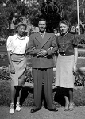
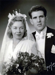

Mabel Bernhild Brudell
Blev 42 år.
| Född: | 1919-01-10 Jörns fs, Jörns sn. [1] | |
|---|
| Döpt: | 1919-02-16 Jörns fs, Jörns sn. [1] | Inga faddrar. |
|---|
| Levde: | 1926 Jörns fs, Jörns sn. | |
|---|
| Inflyttad till: | 1930-12-23 Skellefteå stad. [2] | |
|---|
| Död: | 1961-09-28 Bildhuggarvägen 16, Enskede fs, Stockholms stad. [3] | Dödsorsak: Cancer. |
|---|
| Vigsel: | 1943-12-31 Stockholms stad. [3] |
|---|
| Barn: |
|---|
| Bert Åke Strömberg (1945 - ) |
Personhistoria
| Årtal | Ålder | Händelse |
|---|
| 1919 |
|
Födelse 1919-01-10 Jörns fs, Jörns sn [1] |
| 1919 |
1 mån |
Dop 1919-02-16 Jörns fs, Jörns sn [1] |
| 1926 |
|
Levde 1926 Jörns fs, Jörns sn |
| 1930 |
11 år |
Inflyttad till 1930-12-23 Skellefteå stad [2] |
| 1943 |
24 år |
Vigsel Åke Oskar Strömberg 1943-12-31 Stockholms stad [3] |
| 1945 |
25 år |
Sonen Bert Åke Strömberg föds 1945-01-06 Brännkyrka fs, Stockholms stad [4] |
| 1961 |
42 år |
Död 1961-09-28 Bildhuggarvägen 16, Enskede fs, Stockholms stad [3] |
Källor
| [1] | Jörn C:6 (1918-1920) nr. 9/1919 s.55 k.2/7 |
| |
| | |
| [2] | Skellefteå Sankt Olov AIIA:2C (1929-1931) fol. 552 |
| |
| | |
| [3] | DB, PA / DOR 61 |
| |
| | |
| [4] | Mtl Stockholms stad och län 1971 |
| |
|
|  |
| 1941. Med fontän och bassäng i bakgrunden vid Torget i Boliden. |
| |
|  |
| 1943-12-31. Vigsel i Stockholms stad |
|
{kind=link}
{kind=link}